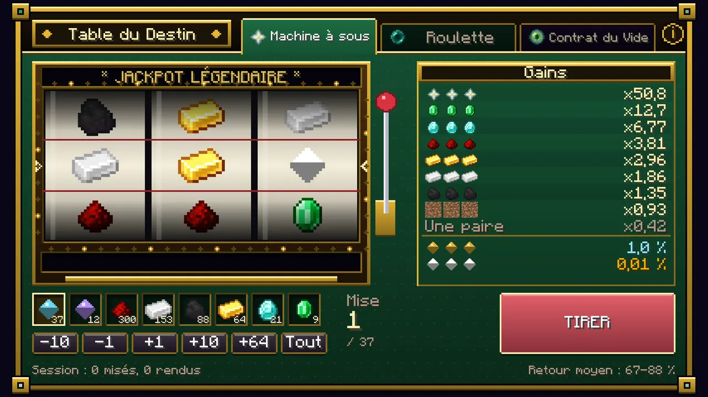
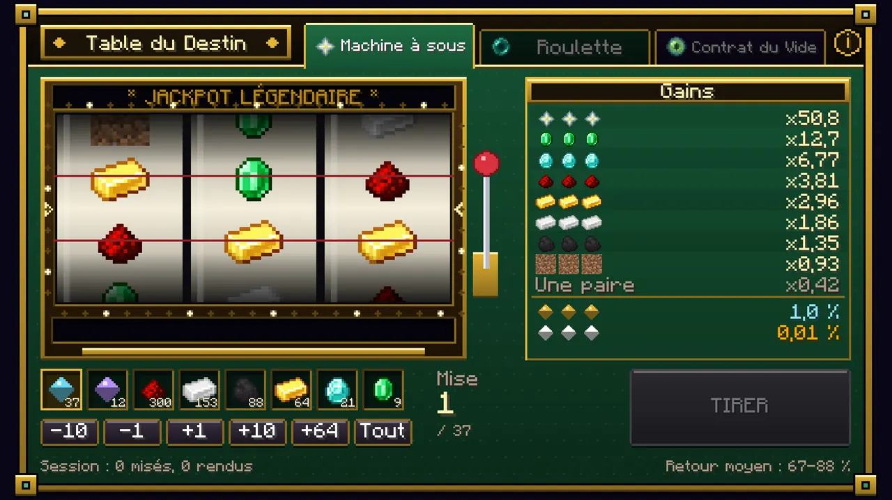
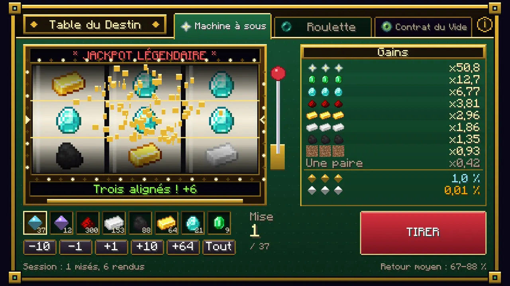
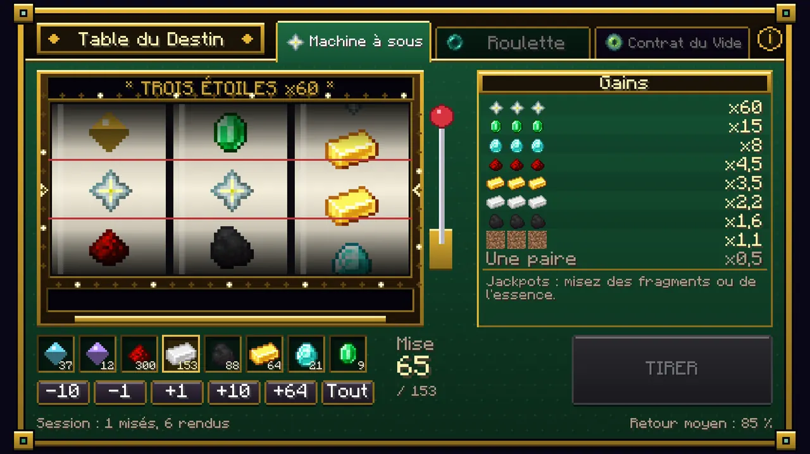
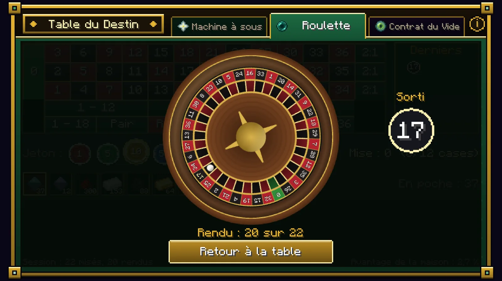
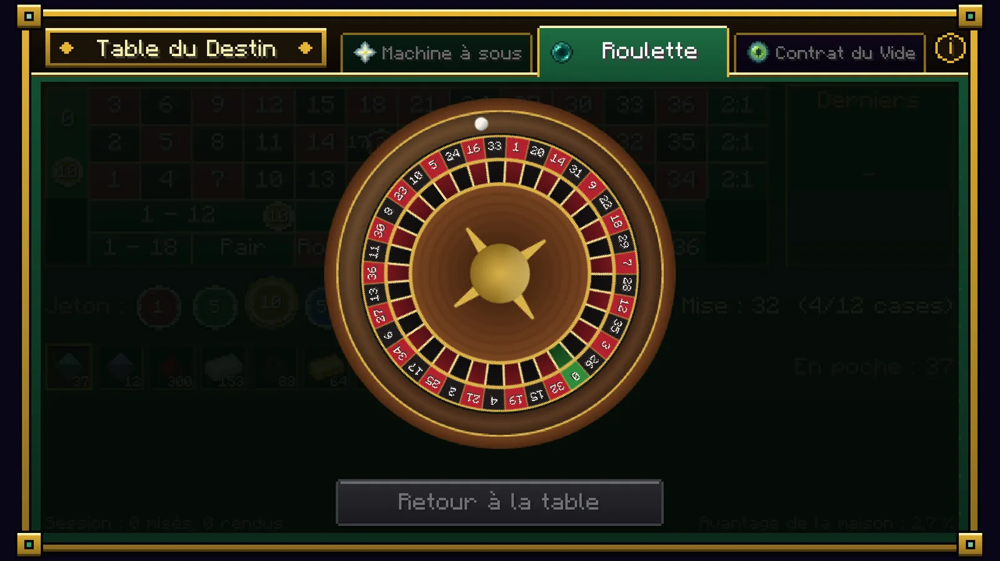
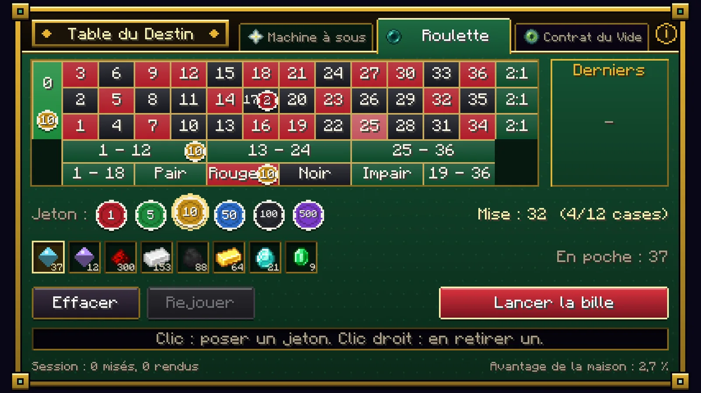
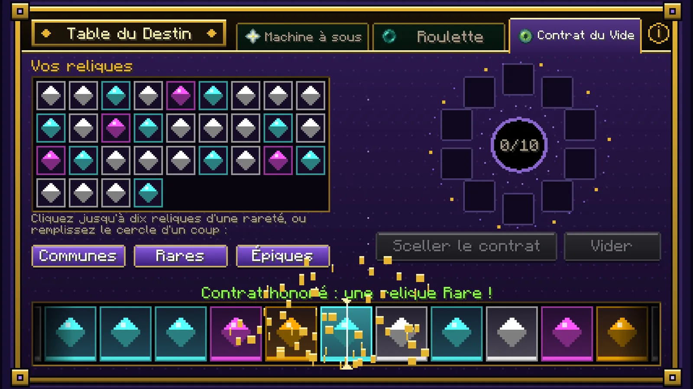
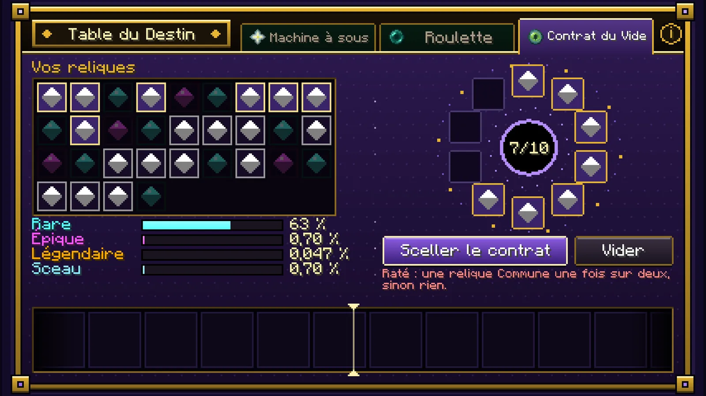

Jeux
La Table du Destin
Un casino à deux faces, tout entier dans un bloc : un clic droit ouvre une fenêtre à trois onglets : deux verts, le casino proprement dit, et un violet, les arcanes. La maison gagne toujours, sur la durée : aucune stratégie n'y change rien, seulement la variance.














La table est un artefact de création (Dé du Destin). Un hologramme de roulette tourne au-dessus d'elle, avec de l'or, un diamant, une émeraude, une étoile et un sceau en orbite. Rien ne se joue en tournoi de la Tour de l'Enfer : le casino y est fermé.
Le casino
On y mise n'importe quel minerai, lingot ou gemme, ainsi que des fragments et de l'essence, comptés dans tout l'inventaire (pas seulement la main, pas seulement une pile). Les gains se paient en nature.
| Ce qui se mise | Objets |
|---|---|
| Monnaies (les seules avec jackpots) | Fragment, Essence d'âme |
| Minerais (les blocs) | Charbon, fer, cuivre, or, redstone, lapis-lazuli, diamant, émeraude, en pierre comme en ardoise des abîmes ; or du Nether, quartz du Nether, débris antiques |
| Minerais bruts | Fer brut, cuivre brut, or brut |
| Gemmes | Diamant, émeraude, lapis-lazuli, quartz du Nether, éclat d'améthyste, cristaux de prismarine |
| Lingots | Fer, cuivre, or, netherite |
| Aussi | Charbon, redstone, fragment de netherite |
Les objets d'autres mods rangés dans les mêmes catégories (minerais, minerais bruts, gemmes, lingots) sont acceptés aussi. Rien d'autre ne se mise : ni outils, ni blocs de minerai compressés, ni nourriture. Dans la fenêtre, le bouton (i) à droite des onglets affiche les règles et les taux du jeu ouvert.
| Jeu | Règle | Retour moyen |
|---|---|---|
| Machine à sous | Trois rouleaux, une ligne. Trois alignés : de ×1,1 (terre) à ×60 (étoile). Une paire rend la moitié de la mise. Un tiers des défaites sont des « presque ». Le résultat est tiré d'abord, les rouleaux s'arrêtent dessus. | 85 % |
| … avec fragments ou essence | Même tableau, un peu réduit, avec deux jackpots : trois sceaux (un sceau d'invocation, 1 % par spin et par unité) et trois reliques (une légendaire, 0,01 % par spin et par unité). Un fragment vaut 1 unité, une essence 3, jusqu'à 10 unités. | 67 à 88 % |
| Roulette | 37 cases, tout le tapis : numéro (×36), douzaine et colonne (×3), rouge, noir, pair, impair, manque, passe (×2). Jusqu'à douze cases par tour : on choisit un jeton (1 à 500), un clic le pose, un clic droit le retire. Les dix derniers numéros restent affichés. | 97,3 % |
Les arcanes
Ici, on ne mise que des reliques, et le jeu fait mal. La musique se coupe : il ne reste qu'un battement de cœur, qui s'emballe quand le bandeau défile.
Le Contrat du Vide. Jusqu'à dix reliques de la même rareté (commune, rare ou épique : jamais de légendaire) entrent dans le contrat. Chaque relique est une petite chance de monter, et les chances s'additionnent.
Cercle vide, trois boutons le remplissent d'une rareté d'un clic : jusqu'à dix communes, rares ou épiques, prises dans l'inventaire et le Reliquaire confondus, les moins bien tirées d'abord. Les reliques verrouillées ne sont jamais prises.
| Relique donnée | Vers rare | Vers épique | Vers légendaire | Sceau | Si le contrat échoue |
|---|---|---|---|---|---|
| Commune | 9 % chacune | 0,1 % | 0,0067 % | 0,1 % chacune | Une commune, ou rien |
| Rare | — | 7 % chacune | 0,02 % | 1 % chacune | Une rare, ou une commune |
| Épique | — | — | 0,5 % chacune | 2 % chacune | Une épique, ou une rare |
Dix épiques plafonnent donc à 5 % de légendaire : le plafond de verre. Un contrat raté rend une seule relique, tirée à pile ou face entre la rareté donnée et celle du dessous. Le sceau fait partie des gains : quand il tombe, c'est lui que rend le contrat, à la place d'une relique. Les familles comptent : si les reliques données sont quatre d'une famille et trois d'une autre, le résultat penche vers la première avec 4 chances sur 7. La famille tirée donne le résultat une fois sur deux ; l'autre moitié du temps il vient de n'importe où, créations comprises pour un légendaire. Le bandeau qui défile à toute vitesse est du théâtre, arrangé pour ralentir près d'une relique plus rare (une fois sur deux pour un contrat d'épiques, une sur trois pour des rares, une sur quatre pour des communes) : la relique était déjà au Reliquaire avant qu'il ne bouge.